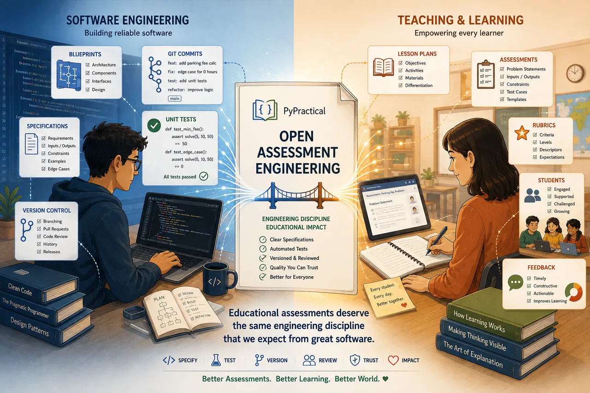

Open Assessment Engineering.
Software engineers build with specifications, standards, version control, automated tests, and continuous improvement. PyPractical asks a simple question: why shouldn't teaching assessments have the same?

“Educational assessments deserve the same engineering discipline that we expect from great software.”
Where engineering meets the classroom
Open Assessment Engineering borrows the discipline of software engineering and applies it to the craft of teaching.
From software engineering
- Specifications precise contracts for behavior
- Standards consistency & readability
- Version control iteration & history
- Unit tests objective, repeatable verification
- CI / continuous improvement evolve from feedback
From teaching
- Problem statements learning objectives made real
- Authentic stories students see why
- Rubrics what mastery looks like
- Feedback the heart of learning
- Differentiation meet the student in front of you
When the two meet, an assessment becomes a small, well-engineered artifact: documented, tested, and openly shared.
The engineering, made concrete
This isn't a slogan. PyPractical already contains the artifacts of a disciplined engineering process.
Specifications
Every assessment follows precise specs — problem structure, Python templates, unit-test conventions, and metadata.
Standards
Python style, Markdown style, and a six-rule scoring model keep every assessment consistent and fair.
Workflow
A repeatable, ten-step process takes an assessment from idea to classroom-tested.
Auto-graded families
41 assessments, 473 unit tests, organized into 11 isomorphic families — graded automatically and consistently.
“PyPractical treats verification as an essential part of assessment engineering.” — 07-TESTING_GUIDE
See the engineering in action
Browse the assessment families — each one a small, documented, automatically-graded engineering artifact.